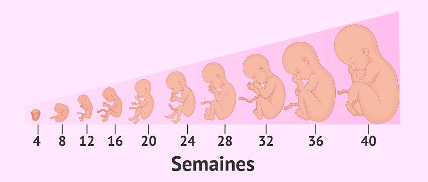

nous sommes là pour parlez a toutes les femmes enceintes, nous proposons des ideés, une assistance
pour toute femme enceinte.de pourvoir garder bien leurs grossesses afin d'accoucher sans problème et vous
soutenir.notre plateforme donne des conseils sur notre site mais aussi sur les resseaux sociaux notre
desirent et des vous assistez jusqu'a l'accouchement nous sommes là pour prendre en compte votre avis et
vous offrirent un espace pour bien partager pour vous femmes enceintes nous pouvons vous aidez avec nos
conseils ou ecoutent votre problème en essayant de vous mettrent en contact avec un expert dans le domaine
le début de tout c'est la question a savoir d'ou viens la grossesse? la femme normalement elle à 3000
overts mais il ya que 300 a 400 ovile qui arrive à la maturité lorsque sa finis la femme atteint la menopose
lorsque le 300 à 400 ovile de la maturité qui se libere l'un après l'autre (c'est se qu'on appelle le cycle de la femme)
lorsque l'ovile se déplace arrive a un endroit qu'on appelle ampoule (c'est le lieu de la fecondation) lorsque le sperme
le trouve dans le lieu de la fecondation autrement dit ampoule se lorsqu'il ya fecondation et dans la fecondation
on trouve le trois stade de la grossesse
le developpement de l'enfant au fil des semaines

1ere stage sa commence de 1mois a 3mois il ya la fecondation il ya formation de zygote
on peut trouve de symptome telque des voumissement, pert d'appetit, lege mot de tete, il ya changement
la mere sera plus belle
2eme stade c'est la periode de l'embryllons de 4mois a 6mois il ya pas de symptome sa depend de l'organisme
de la mere l'enfant et dans la position assise


3eme stage de 6mois a 9mois le foetus se developpe , l'enfant recois la nourriture de la mere par le cordons
(il ya tourement de l'enfant) et c'est la ou l'enfant commence a bouger

le tout debut de la grossesse lorsqu'elle mange apres elle vomis arriver
a un certains moment tout deviens bon pour elle, a 6mois une femme enceinte ne doit pas manger les aliment
qui ont trop des vitamines pour permettre a l'enfant d'avoir un bon poids elle doit avoir de regime et controler
quoi manger
concernant son traitement
il ya le CPN (consultation precouse natala) a 3mois deja elle doit commencer le CPN dans 3mois le materiel
qu'on doit utiliser pour la femme enceinte le mettre ruban , touchee vaginale la aussi sa depend du
rendez-vous avec son gynecologue, elle doit toujour consulter l'echographie malgrer son etat et prendre bien
soin de sa grossesse suivi visites tests prenataux
une femme enceinte a de condition avant de prendre un produit elle doit consulter son gynecologue elle ne doit
pas prendre n'importe quel produit meme s'il ya tant de douleur le seul produit qui est permis durant tout le 9mois
de sa grossesse que le paracetamol et pour le douleur du bas ventre (douleur pelvine) elle doit prendre le papaverine
c'est votre premiere grossesess ?

malgrer la grande foie d'etre enceinte, on reste tres angoissee et effrayee
face a une premiere grossesse, sans cesser de se poser un tas de questions
nous avons rassembler pour vous 7 precieux conseils et agreable grossesse
voici quelques conseils pour une toute premiere grossese
conseil 1 : boire beaucoup pour s'hydrates, 2 bannir certains produits, 3 adaptez une bonne
hygiene de vie, 4 fractionnez vos repos, 5 bougez, 6 on leve le pied, 7 consulter en cas de doute
votre gynecologue ou une sage-femme